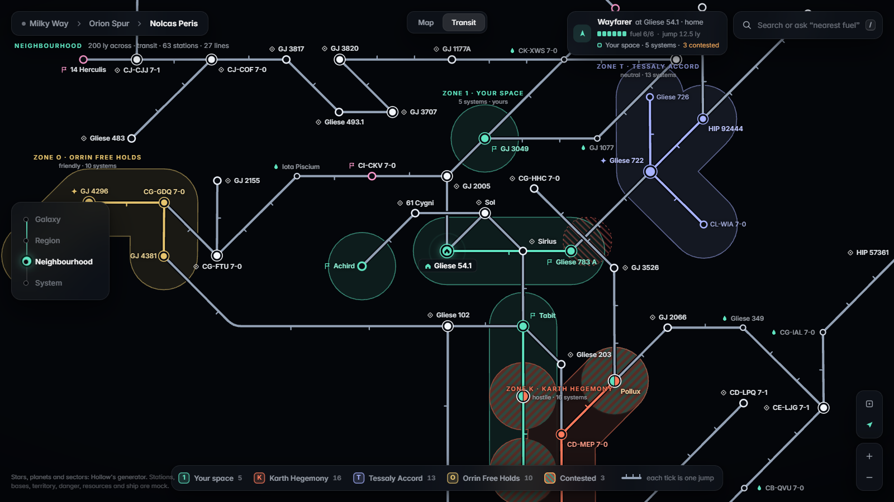
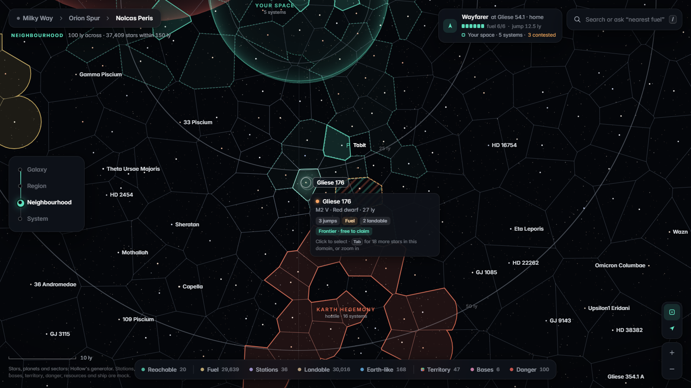
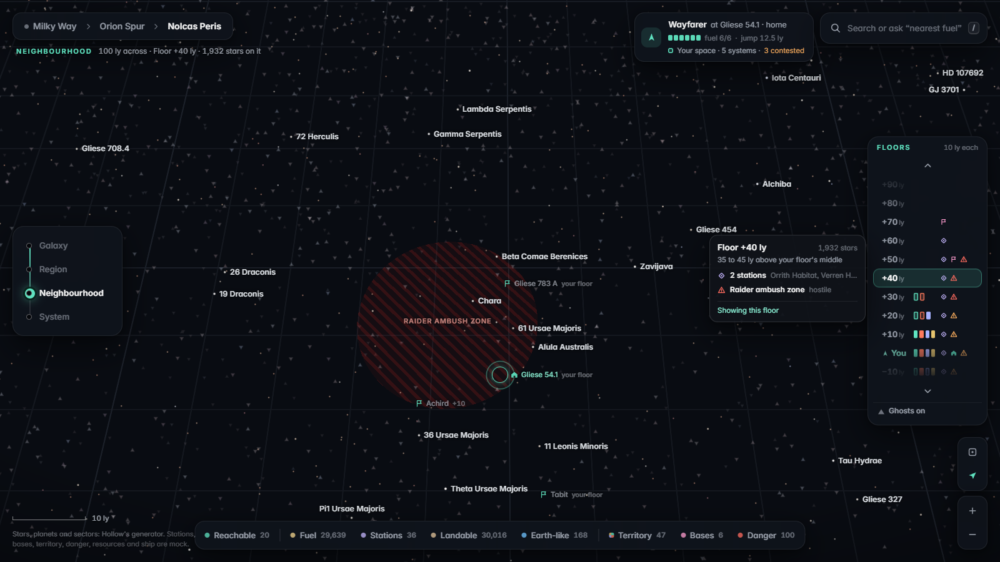
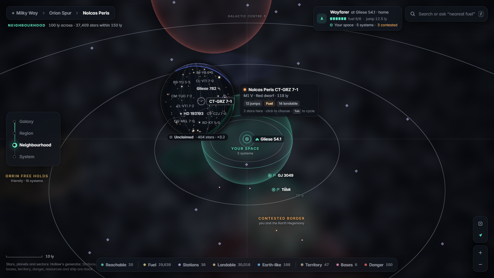
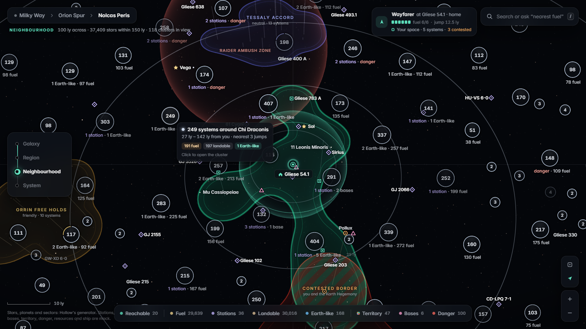

Hollow map concepts
Click a card to open it; your browser's Back button returns here. Every invention below is the same approved base (B's layout, A's colours and search) with only the way stars and territory are drawn changed. Real stars and planets from Hollow's generator; stations, bases, factions and danger are mock. Keys 0–6 open a concept from this page.
Round 3: one map
The five inventions

Transit 1
The neighbourhood as a metro map: stations, jump lines, territory zones.
Try: press M to morph between the real map and the diagram; click a station, then Route.

Domains 2
Every star owns a cell; territories read like countries.
Try: move the mouse anywhere (one star is always under it); Tab cycles stars in a cell; zoom in and out.

Floors 3
Space in 10 ly layers, one flat floor at a time.
Try: use the floor picker on the right, or E / Q to go up and down.

Lens 4
A calm map; a magnifier reveals stars only where you look.
Try: move the mouse over dense areas; L locks the lens on a selection; Alt + scroll resizes it.

Clusters 5
Stars merged into bubbles with counts (still too busy in this version).
Try: hover a bubble for its summary, click it to open it.
The approved base
Earlier rounds, for reference: A · Search & Go · B · Zoom levels